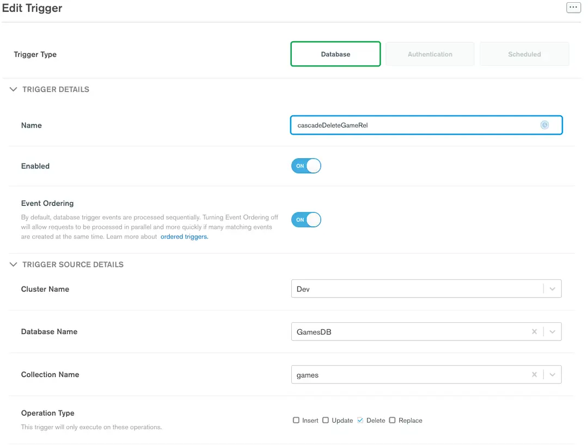
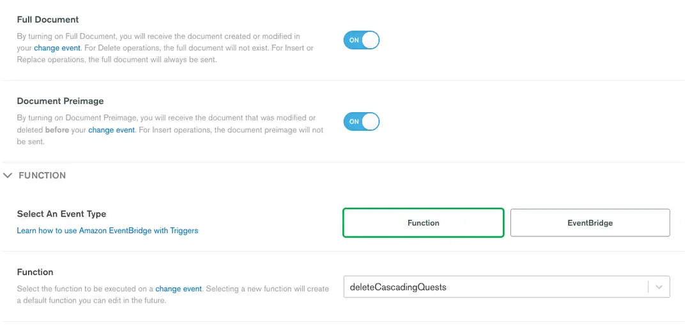
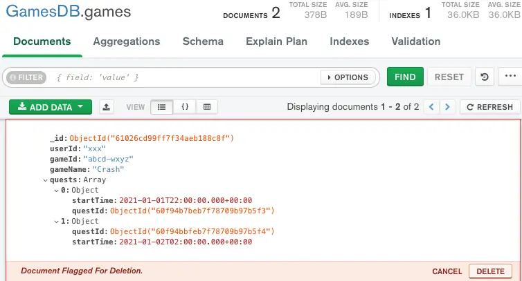

2.2 Mongoose
Mongoose is an Object Data Modeling (ODM) library for MongoDB and Node.js. It manages relationships between data, provides schema validation, and is used to translate between objects in code and the representation of those objects in MongoDB.
Installation
npm i mongoose
Connect to mongodb
Create a file server.js
const mongoose = require('mongoose')
const dbUrl = "<URI>"
// Async function
mongoose.connect(dbUrl)
.then(() => console.log('Connected to MongoDB'))
.catch(err => console.error('Could not connect to MongoDB', err));
/*<URI> field
============
if mongodb is locally installed use
mongodb://localhost:port/<database_name>
if mongodb is from mongo atlas cloud
mongodb+srv://<username>:<password>@cluster0.svo1s8u.mongodb.net/<database_name>?retryWrites=true&w=majority&appName=Cluster0
*/
1. Create a Schema
A schema is a JSON object that defines the structure and contents of your data. A Mongoose model is a wrapper on the Mongoose schema. A Mongoose schema defines the structure of the document, default values, validators, etc., whereas a Mongoose model provides an interface to the database for creating, querying, updating, deleting records, etc
1.1 Simple Schema
Create a file Post.js
const postSchema = new mongoose.Schema({
title: String,
author: String,
tag: [ String ], /* list of strings */
date: {type: Date, default: Date.now}
});
module.exports = mongoose.model("Post", userSchema);
1.2 Complex Schema
Create a file User.js
const mongoose = require('mongoose');
const addressSchema = new new mongoose.Schema({
street: String,
city: String
});
const userSchema = new mongoose.Schema({
name: {
type: String,
required: true,
lowercase: true,
minLength: 1
/* Can put more properties */
},
age: {
type: Number,
min: 1,
max: 100,
/* for custom validator */
validate: {
validator: v => v % 2 == 0,
message: props => `${props.value} is not an even number`
}
},
email: String,
createdAt: {
type: Date,
immutable: true,
// default: new Date()
// above will give you a static value i.e. default: 5 (same for all objects)
default: () => Date.now(), /* new value every time a object it created. i.e. current date */
}
updatedAt: Date
bestFriend: mongoose.SchemaTypes.ObjectId,
bestFriend2: {
type: mongoose.SchemaTypes.ObjectId,
ref: "User" /* tells mongodb, what type the model objectId refers to */
}
hobbies: [String],
address: {
street: String,
city: String
},
address2: addressSchema /* alternative to address */
});
1.3 Create a Model
In User.js
module.exports = mongoose.model("User", userSchema);
/* exports the model so that other js files can use it */
// Alternatively: Can export the schema
// module.exports = userSchema;
//
// In this case, the files which require `User.js` should create a .model()
// i.e. In server.js
// const userSchema = require('./User')
// const User = mongoose.model("User", userSchema);
// You can also export multiple schemas/models via export
// module.exports = [
// mongoose.model("User", userSchema),
// mongoose.model("Person", userSchema)
// ]
//
// In server.js
// const UserModels = require('./User')
// UserModel[0] // User Model
// UserModel[1] // Person Model
User = mongoose.model("User", userSchema) The first argument is the singular name of the collection your model is for. Mongoose automatically looks for the plural, lowercased version of your model name in its collections. Thus, for the example above, the model User is for the users collection in the database. The model Person is for the persons collection in the database.
TIP
The
.model()function makes a copy of schema. Make sure that you’ve added everything you want to schema, including hooks, before calling.model()!
Special Note:
module.exports = mongoose.model("User", userSchema, "persons");
If the third parameter is defined, User model data will stored in collection specified in the third param. i.e. persons collection
1.4 Creating a Collection
By default, mongoose.model("User", userSchema); will create a collection users once a user object is saved(). In case the collection needs to be created without a user object:
In server.js
const User = require('./User')
User.createCollection();
1.5 Use the Model
In server.js
const mongoose = require('mongoose')
mongoose.connect("<URI>")
const User = require('./User')
User.<method>(...)
/* can us methods from the user class */
User.findOne(...);
User.findMany(...);
User.updateOne(...);
User.updateMany(...);
2. Create a User
In server.js
const mongoose = require('mongoose')
const User = require('./User')
mongoose.connect("<URI>")
/* creating a user */{name: "Kyle", age: 26}
const user = new User()
/* save it into the database */
/* this is an async function */
user.save().then(() => console.log("User Saved"))
to avoid using then(), create a async function alternatively
const mongoose = require('mongoose')
const User = require('./User')
mongoose.connect("<URI>")
run()
async function run() {
/* creating a user */
const user = new User({name: "Kyle", age: 26})
/* save it into the database */
await user.save();
/* or, following creates a user and saves in db */
// const user = await User.create({name: "Kyle", age: 26})
console.log("User Saved");
consle.log(user);
}
Console output:
{
name: "Kyle",
age: 26,
_id: new ObjectId("61855c3d736483eaef556c5c"), /* unique id */
__v: 0 /* for internal versioning */
}
Note that user.save() will create a collection users and store the data of user object (document) as a json.
Creating a user with multiple fields
...
run()
async function run() {
try { /* errors, i.e wrong value type for the field */
const user = await User.create({
name: "Kyle",
age: 26,
hobbies: ["Weight Lifting", "Bowling"],
address: {
street: "Main St",
}
});
} catch (e) {
console.log(e.message);
// console.log(e.errors.age);
}
console.log("User Updated");
}
3. Update User
In server.js
...
run();
async function run() {
try {
const user = await User.create({name: "Kyle", age: 26})
user.name = "Sally";
await user.save();
console.log("User Updated");
console.log(user);
} catch (e) {
console.log(e.message);
}
}
WARNING
User.findbyIdAndUpdate()or.updateOne()or.updateMany()or etc, will not run field validations defined in the schema. UseUser.findById().save()instead!
...
run();
async function run() {
try {
const user = await User.findById(<object_id>);
user.name = "Sally";
await user.save();
console.log("User Updated");
console.log(user);
} catch (e) {
console.log(e.message);
}
}
4. Find a User
...
run()
async function run() {
try {
const user = await User.find({name: "Kyle"}); // All users with the name Kyle
console.log(user)
} catch (e) {
console.log(e.message);
}
}
4.1 where(…) Method
...
run()
async function run() {
try {
const user = await User.where("name").equals("Kyle");
const user = await User.where("age").gt("12");
// greater than 12 (notice "12" is a numerical string)
// Chaining
const user = await User.where("age").gt("12").where("name").equals("Kyle");
/* Return only 2 users */
const user = await User.where("age").gt("12").limit(2);
// Select only the "age" field, equivalent ot SELECT in SQL
const user = await User.where("age").gt("12").select("age")
console.log(user[0])
} catch (e) {
console.log(e.message);
}
}
4.2 Updating a Reference Field
...
run()
async function run() {
try {
// Select only the "age" field, equivalent ot SELECT in SQL
const user = await User.where("name").equals("Kyle").limit(1)
user[0].bestFriend = '61855c3d736483eaefcddecfef';
user[0].bestFriend2 = '61855c3d736483eaefffffccff';
await user[0].save();
console.log(user[0])
} catch (e) {
console.log(e.message);
}
}
populate() method
...
run()
async function run() {
try {
const user = await User..where("name").equals("Kyle")
.populate("bestFriend")
.limit(1)
/* populate(...) "bestFriend" field
==============================
Instead of the "bestFriend" field is just being an id,
populate the "bestFriend" field with teh actual data
of the best friend object including all the fields.
Since join in mongodb are not the best thing to do,
populate() is a good alternative.
*/
console.log(user[0])
} catch (e) {
console.log(e.message);
}
}
5. Delete
...
run()
async function run() {
try {
const stat = await User.deleteOne({name: "Kyle"}); // All users with the name Kyle
console.log(stat)
} catch (e) {
console.log(e.message);
}
}
output
{ deletedCount: 1 }
5.1 Cascade on Delete
Relationships are an important part of any data design. Relational databases use primary and foreign key concepts to form those relationships when normalizing the data schema. Using those concepts, it allows a “cascading’’ delete, which means a primary key parent delete will delete the related siblings.
MongoDB allows you to form relationships in different ways—for example, by embedding documents or arrays inside a parent document. This allows the document to contain all of its relationships within itself and therefore it does the cascading delete out of the box. Consider the following example between a user and the assigned tasks of the user:
{
userId : "abcd",
username : "user1@example.com"
Tasks : [
{ taskId : 1,
Details : ["write","print" , "delete"]
},
{ taskId : 1,
Details : ["clean","cook" , "eat"]
}]
}
However, in some design cases, we will want to separate the data of the relationship into Parent and Sibling collections—for example, games collection holding data for a specific game including ids referencing a quests collection holding a per game quest. As amount of quest data per game can be large and complex, we’d rather not embed it in games but reference:
Games collection
{
_id: ObjectId("60f950794a61939b6aac12a4"),
userId: 'xxx',
gameId: 'abcd-wxyz',
gameName: 'Crash',
quests: [
{
startTime: ISODate("2021-01-01T22:00:00.000Z"),
questId: ObjectId("60f94b7beb7f78709b97b5f3")
},
{
questId: ObjectId("60f94bbfeb7f78709b97b5f4"),
startTime: ISODate("2021-01-02T02:00:00.000Z")
}
]
}
Each game has a quest array with a start time of this quest and a reference to the quests collection where the quest data reside.
Quests collection
{
_id: ObjectId("60f94bbfeb7f78709b97b5f4"),
questName: 'War of fruits ',
userId: 'xxx',
details: {
lastModified: ISODate("2021-01-01T23:00:00.000Z"),
currentState: 'in-progress'
},
progressRounds: [ 'failed', 'failed', 'in-progress' ]
},
{
_id: ObjectId("60f94b7beb7f78709b97b5f3"),
questName: 'War of vegetable ',
userId: 'xxx',
details: {
lastModified: ISODate("2021-01-01T22:00:00.000Z"),
currentState: 'failed'
},
progressRounds: [ 'failed', 'failed', 'failed' ]
}
When a game gets deleted, we would like to purge the relevant quests in a cascading delete. This is where the Preimage trigger feature comes into play.
5.2 Preimage Trigger Option
The Preimage option allows the trigger function to receive a snapshot of the deleted/modified document just before the change that triggered the function. This feature is enabled by enriching the oplog of the underlying replica set to store this snapshot as part of the change.
In our case, we will use this feature to capture the parent deleted document full snapshot (games) and delete the related relationship documents in the sibling collection (quests).
5.2.1 Building the Trigger
When we define the database trigger, we will point it to the relevant cluster and parent namespace to monitor and trigger when a document is deleted—in our case, GamesDB.games.

To enable the Preimage feature, we will toggle Document Preimage to ON and specify our function to handle the cascade delete logic.

5.2.2 deleteCascadingQuests - Function
exports = async function(changeEvent) {
// Get deleted document preImage using "fullDocumentBeforeChange"
var deletedDocument = changeEvent.fullDocumentBeforeChange;
// Get sibling collection "quests"
const quests = context.services.get("mongodb-atlas").db("GamesDB").collection("quests");
// Delete all relevant quest documents.
deletedDocument.quests.map( async (quest) => {
await quests.deleteOne({_id : quest.questId});
})
};
As you can see, the function gets the fully deleted games document present in changeEvent.fullDocumentBeforeChange and iterates over the quests array. For each of those array elements, the function runs a “deleteOne” on the quests collection to delete the relevant quests documents.
5.2.3 Deleting the Parent Document
Now let’s put our trigger to the test by deleting the game from the games collection:
